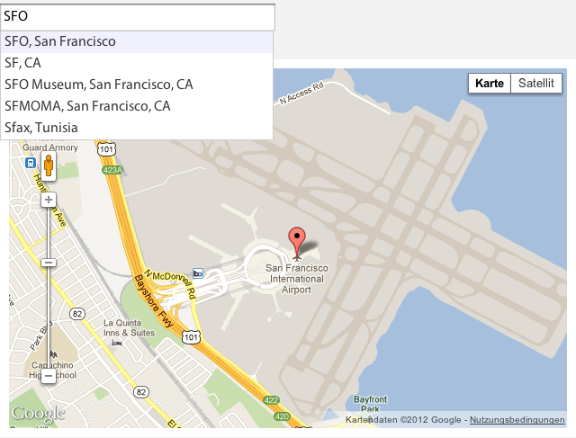

$.geocomplete() - Version 1.6.4
jQuery Geocoding and Places Autocomplete Plugin
An advanced jQuery plugin that wraps the Google Maps API's Geocoding and Places Autocomplete services. You simply provide an input that lets you search for locations with a nice autocomplete dropdown. Optionally add a container to show an interactive map and a form that will be populated with the address details.
View the annotated source.
Screenshot
Basic Usage
To convert an input into an autocomplete field, simply call the Geocomplete plugin:
$("input").geocomplete(); // Option 1: Call on element.
$.fn.geocomplete("input"); // Option 2: Pass element as argument.
If you use the plugin without showing a map you must display the "powered by Google" logo under the text field.
Examples
Here is a list of basic uses:
- Simple - Single input with an event logger.
- Map - Adding a map.
- Location - Adding a default location.
- Form - Populate form fields.
- Attribute - Using custom attributes to populate data.
- Multiple results - Handling multiple results from the geocoder.
- Draggable - A draggable marker to redefine the position.
Requirements
Make sure you include the Google Maps API with the Places Library before loading this plugin as described here.
<script src="http://maps.googleapis.com/maps/api/js?sensor=false&libraries=places"></script>
<script src="jquery.geocomplete.js"></script>
Trigger Request
To trigger a geocoding request from outside (eg. when hitting the "find" button), simply trigger the "geocode" event on the element.
$("input").geocomplete();
// Trigger geocoding request.
$("button.find").click(function(){
$("input").trigger("geocode");
});
Adding a Map Preview
To link the geocode results with an interactive map, you can pass map as an option to the plugin.
$("#my_input").geocomplete({
map: "#my_map"
});
The map option might be a selector, a jQuery object or a DOM element.
Populate Form Data
You can pass details as an option to specify a container that will be populated when a geocoding request was successful.
By default the plugin analyses the name attribute of the containers child nodes and replaces the content. You can override the detailsAttribute to use another attribute such as data-geo.
If the element is an input, the value will be replaced otherwise the plugin overrides the current text.
Note: Some address components such as "country" return an additional short_name. You can access them by simply adding _short at the end of the type.
Simple Example:
<form>
Latitude: <input name="lat" type="text" value="">
Longitude: <input name="lng" type="text" value="">
Address: <input name="formatted_address" type="text" value="">
</form>
$("input").geocomplete({ details: "form" });
Advanced Example:
<div class="details">
Latitude: <span data-geo="lat" />
Longitude: <span data-geo="lng" />
Address: <span data-geo="formatted_address" />
Country Code: <span data-geo="country_short" />
</div>
$("input").geocomplete({
details: ".details",
detailsAttribute: "data-geo"
});
List of Options
The following options might be passed to the plugin call. If you omit them, they fall back to the default.
Example:
$("#my_input").geocomplete({
map: "#my_map",
mapOptions: {
zoom: 10
},
markerOptions: {
draggable: true
},
details: "#my_form"
});
-
map- Might be a selector, a jQuery object or a DOM element. Default isfalsewhich shows no map. -
details- The container that should be populated with data. Defaults tofalsewhich ignores the setting. -
location- Location to initialize the map on. Might be an addressstringor anarraywith [latitude, longitude] or agoogle.maps.LatLngobject. Default isfalsewhich shows a blank map. -
bounds- Whether to snap geocode search to map bounds. Default:trueif false search globally. Alternatively pass a custom LatLngBounds object -
detailsAttribute- The attribute's name to use as an indicator. Default:"name" -
mapOptions- Options to pass to thegoogle.maps.Mapconstructor. See the full list here. -
mapOptions.zoom- The initial zoom level. Default:14 -
mapOptions.scrollwheel- Whether to enable the scrollwheel to zoom the map. Default:false -
mapOptions.mapTypeId- The map type. Default:"roadmap" -
markerOptions- The options to pass to thegoogle.maps.Markerconstructor. See the full list here. -
markerOptions.draggable- If the marker is draggable. Default:false. Set to true to enable dragging. -
maxZoom- The maximum zoom level to zoom in after a geocoding response. Default:16 -
types- An array containing one or more of the supported types for the places request. Default:['geocode']See the full list here.
Events
You can subscribe to events of the geocode plugin by using the default jQuery syntax:
$("input")
.geocomplete()
.bind("geocode:result", function(event, result){
console.log(result);
});
The following events are supported:
-
"geocode:result"- Geocode was successful. Passes the original result as described here. -
"geocode:error"- Fired when the geocode returns an error. Passes the current status as listed here. -
"geocode:multiple"- Fired immediately after the "result" event if multiple results were found. Passes an array of all results. -
"geocode:dragged"- Fired when the marker's position was modified manually. Passes the updated location. -
"geocode:click"- Fired when the map is clicked on. Passes the clicked location. -
"geocode:zoom"- Fired when the maps zoom level is changed. Passes the updated zoom level.
Methods and Properties
You can access all properties and methods of the plugin from outside. Simply add a string as the first argument to the .geocomplete method after you initialized the plugin.
Example:
// Initialize the plugin.
$("input").geocomplete({ map: ".map_canvas" });
// Call the find method with the parameter "NYC".
$("input").geocomplete("find", "NYC");
// Get the map and set a new zoom level.
var map = $("input").geocomplete("map");
map.setZoom(3);
Address and Places Component Types
The following types are supported by the geocoder and will be passed to the provided form or container:
street_address, route, intersection, political, country, administrative_area_level_1, administrative_area_level_2, administrative_area_level_3, colloquial_area, locality, sublocality, neighborhood, premise, subpremise, postal_code, natural_feature, airport, park, point_of_interest, post_box, street_number, floor, room, lat, lng, viewport, location, formatted_address, location_type, bounds
For more information about address components visit http://code.google.com/apis/maps/documentation/geocoding/#Types
Additionally the following details are passed when the Places API was requested:
id, url, website, vicinity, reference, rating, international_phone_number, icon, formatted_phone_number
More information can be found here: https://developers.google.com/maps/documentation/javascript/places#place_details_responses
Issues
Feel free to add your issues and feature requests to our tracker: https://github.com/ubilabs/geocomplete/issues
About
Developed by Martin Kleppe at
Your partner for location-based services and Google Maps integration.